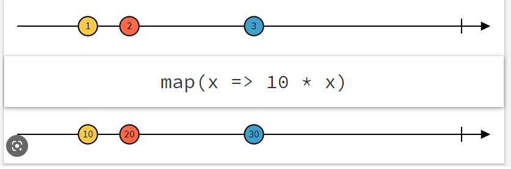

| Notions de flux | Opérateurs sur flux | Diagrammes de marbre |
|---|---|---|
Flux de :
|
Ce sont les mêmes opérateurs que pour les tableaux (map, filter, each, etc.) |  |
| Relationnelle | Non relationnelle |
|---|---|
| R2DBC : Reactive Relational Database Connectivity Spécification ouverte : https://github.com/r2dbc/r2dbc-spi | Requiert un driver réactif spécifique à votre base de données Exemple : https://docs.mongodb.com/drivers/reactive-streams/ |
| RSocket | gRPC |
|---|---|
| Protocole de communication créé par Netflix, implémentant le manifeste réactif au niveau du protocole de communication. La communication est effectuée en binaire avec plusieurs modes de transport (TCP/WebSocket/Aeron/HTTP/2 Stream). Plus d'infos : https://rsocket.io/ | Protocole créé par Google, basé sur HTTP/2 et Proto Buff pour effectuer des appels RPC (Remote Procedure Call), permettant d'appeler du code distant comme un objet local. Plus d'infos : https://grpc.io/ |